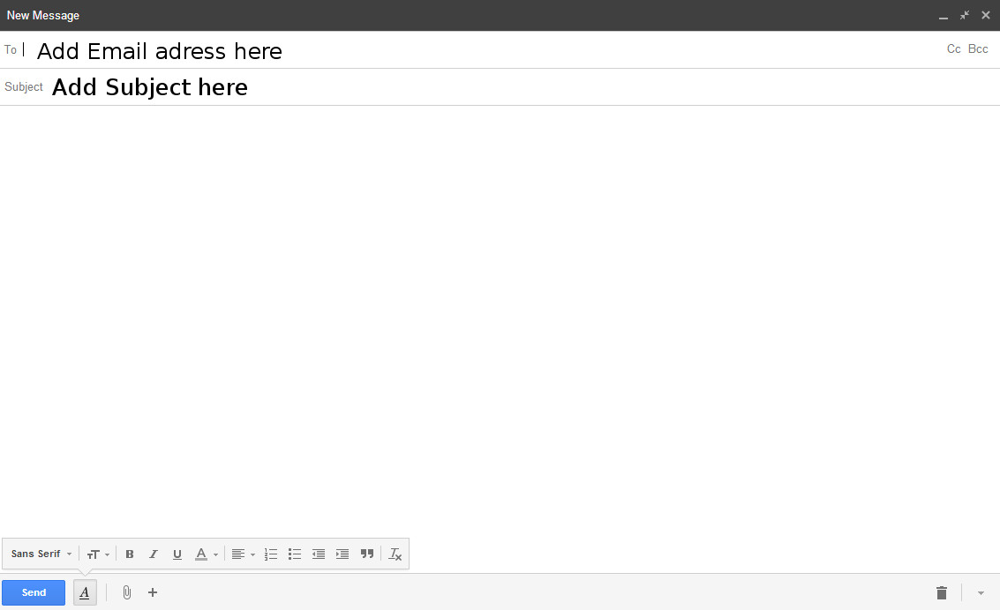
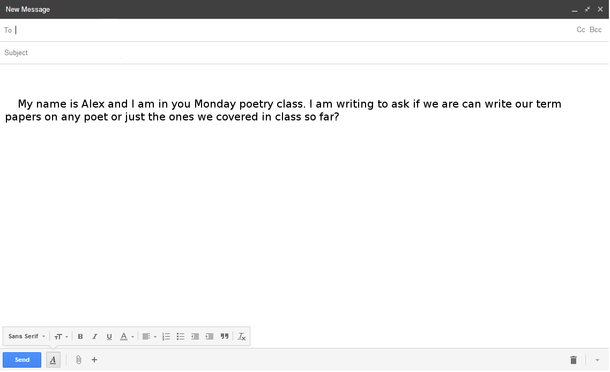
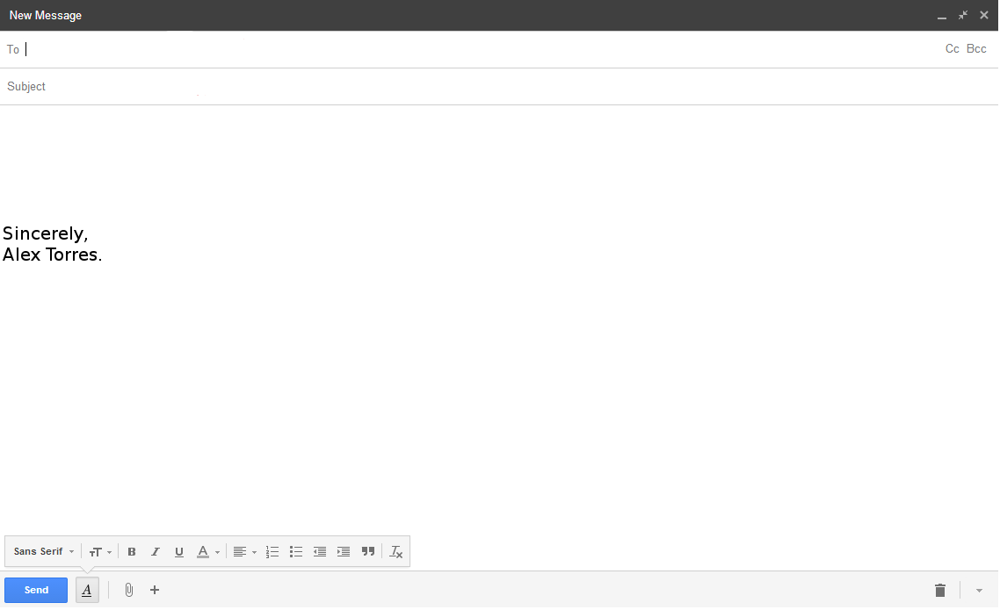
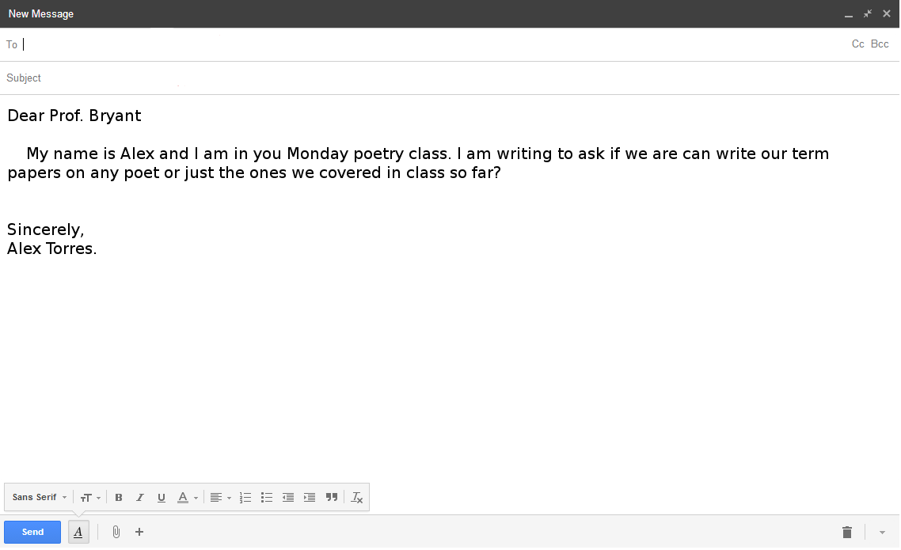

So you want to write an email but you're not sure how to start. No need to worry you've come to the right place because on this page you will find a simple step by step guide on how to write an email. Writing an email can be tricker then you would think with there being slight variations in how you should write depending on who you are writing to and the situation. Knowing how and when to write a certain way is the key to creating a well written email. Below you will find a simple guide explaining the basics as well as the smaller nuances of witting an email.
When you first begin writing your email there are two very important pieces of information you need to start with the first is the email address of the person you are emailing and the subject of the email. Be sure to write the correct email address in the box that says "to" of the person you are writing to otherwise they will not respond to the email.
Next is the email subject. This step is very important as it lets the person reading your email know what the it will be about with out having to read it. This way the person knows to read it right away if it's importannt or can search for the email much easier in their inbox.
Make the subject of your email short and to the point. You do not need to explain everything you are writing about (that's what the body of you email is for) but give them enough information so they know what to expect.

The salutation is basicly you greeting the person you are writing to. There are many ways to do this from the formal "Dear" or the more friendly "hi" and"Hello". Depending on who you are writing to you may want to chose your salutation carefully. For example you would not want to greet your professor or a potential employer with "Yo" or "Hey". After you have the proper salutation next is what to call the person you are writing to. This to is more complicated than it seems because like the greeting depending on your relationship to the person what you call them can change. If the email is to friend or family then first names are fine but in most other cases you should use the person's title followed by their last name. An example if this would be if you emailed your college professor which would look like this:"Dear Prof. Johnson" Using titles this way show a level of respect that using a first name would not.
Here are a few examples of common salutations and titles:
- "Dear. Dr. Louis"
- "Dear All" ( If its more than one person)
- "To whom it may concern" ( When you are not sure who will be reading the email)
- "Dear Mrs. Rivera" (For a maried woman)
Now that you have your greeting and title done it's time to start writing the main part of the email which is referred to as the body. When writing your email try and be straight to the point and not ramble on unnecessarily especially if you are writing to a superior at work or a professor. This is especially important if you asking for help with a problem as you don't want the reader to give up on the email before they get to your problem or question. Also within the first few lines you should identify yourself and your relationship to the reader so they don't spend the rest of the email trying to figure out who you are. When writing keep in mind that you are not writing a text message so try to use proper grammar and spell out each word and keep emoticons to a minimum. The body of your email should cover all you need to say or ask with out being to long and while being as clear as possible. For a simple example of a body of an emial see below

Now that you have finished writing the body of your email its to sign it. Signing your email is similar to the salutation in that how you write it depends on who you are writing to. The good thing about the signature is that since it comes after the salutation and body of the email you should know already how formal the tone is and what kind of signature to leave. You should start your signature with a phrase such as "sincerely" or "best" followed by a comma and then after dropping down a line write your first and last name. for an example see the picture below.

Now that you have completed all the main components of you email all that is left to do is proofread it for errors. You should be proofread for grammatical errors as well as simple mistakes like making sure you give the person the right day. For example if you plan on making an appointment for the 5th but accidently typed in the 8th that could cause you a big headache which can be avoided by proofreading. Also by making sure there are no grammatical errors you are giving off a professional appearance that could help you latter which is always a good thing. It may seem like something you can skip but proofreading is one of the most important part of writing anything including emails. Now that you have proofread you are ready to send you email with it looking something like this.
